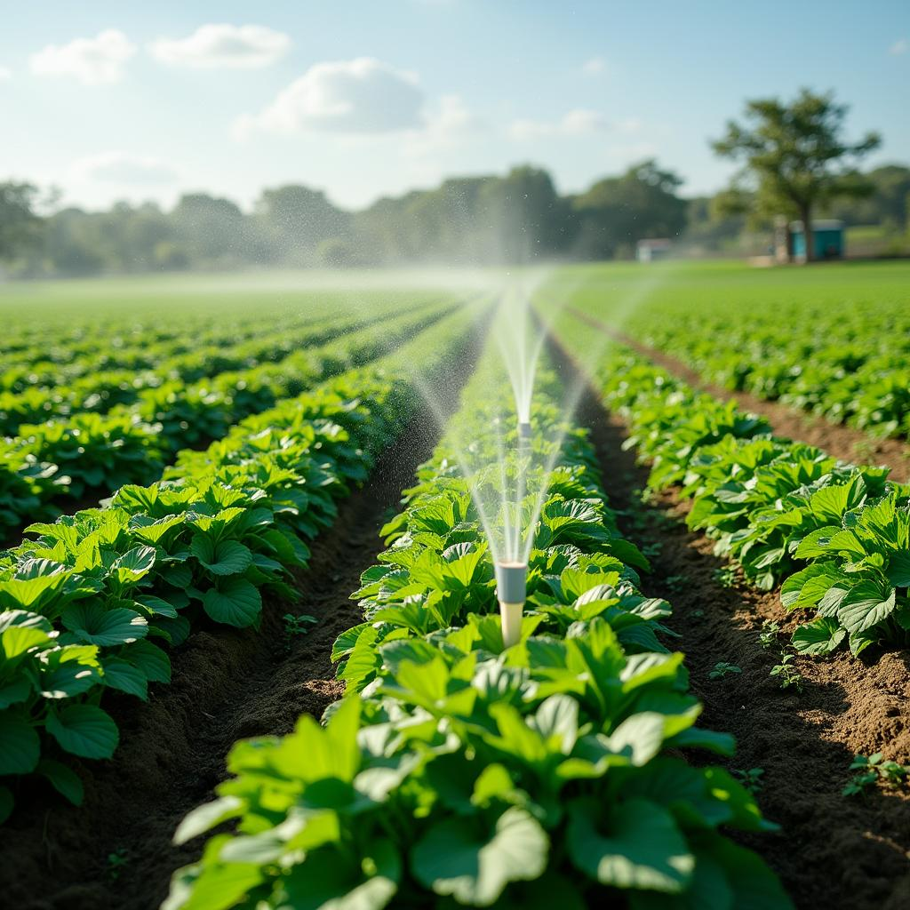

Técnicas sustentáveis na agricultura promovem colheitas eficientes, preservam os recursos naturais e fortalecem a conexão entre campo e cidade.
Introdução
Já parou para pensar em como o campo e a cidade estão interligados? Cada refeição, cada copo d’água e cada tradição que nos define vem dessa troca essencial. Este site revela como essa relação constrói um futuro mais sustentável e harmônico.
Quer apoiar essa relação? Visite feiras locais, conheça produtores ou explore iniciativas de sustentabilidade na sua cidade!
Agricultura Sustentável

Tecnologia no Campo
.jpg)
O avanço da tecnologia no campo melhora a produtividade e sustentabilidade por meio de drones, sensores e sistemas inteligentes.
Vida Urbana e Dependência do Campo
O Campo Alimenta a Cidade
Os centros urbanos dependem dos produtores rurais para garantir alimentos frescos e acessíveis. Sem essa conexão, a segurança alimentar das cidades estaria em risco.
Impacto Econômico e Ambiental
A colaboração entre campo e cidade não é apenas sobre alimentos, mas também sobre práticas sustentáveis que impactam diretamente o meio ambiente e a economia.

Esta feira urbana é abastecida diretamente pelos produtores rurais, fortalecendo a economia local e garantindo alimentos frescos e saudáveis.
Preservação Ambiental

O equilíbrio entre agricultura e preservação ambiental garante a biodiversidade e a saúde dos ecossistemas.
Cultura e Tradições

Festas, culinária e práticas culturais do campo enriquecem a vida urbana e fortalecem identidades.